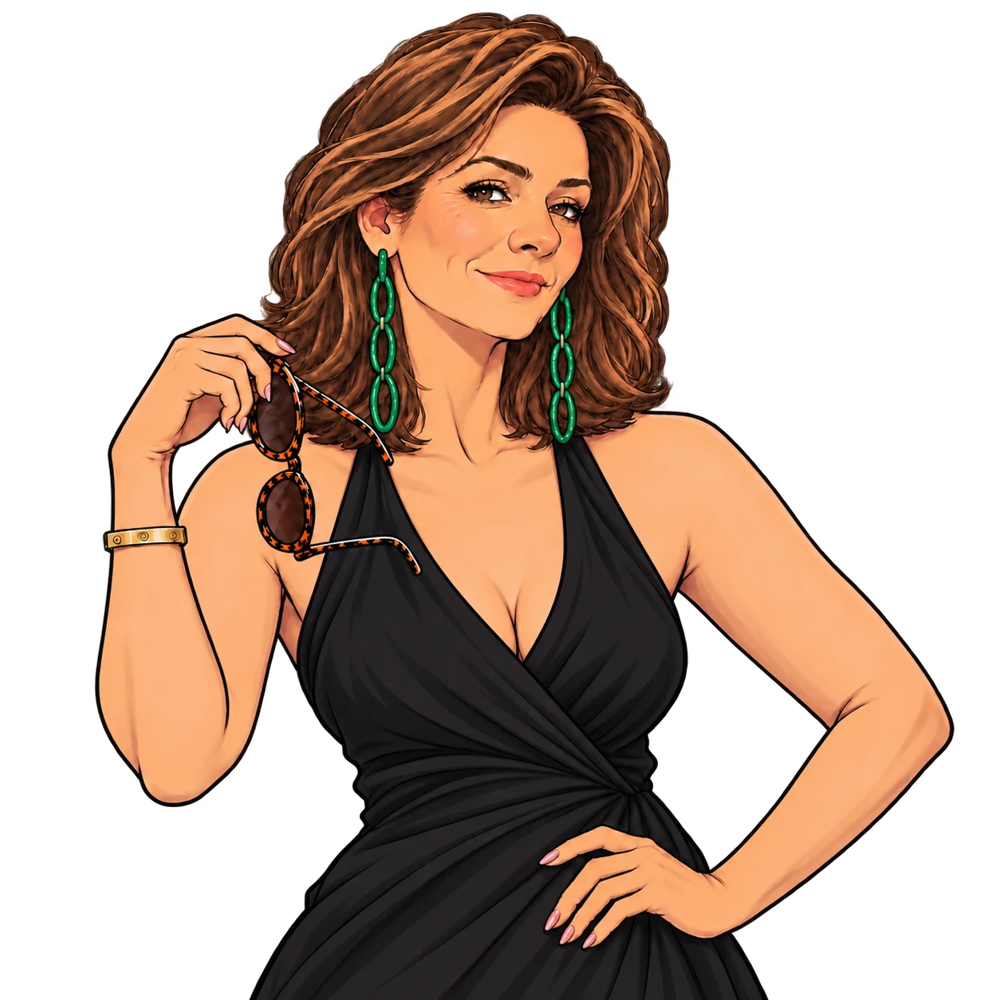

Курс - уникальный и авторски объединяет несколько подходов.
Курс-практикум «Саманта:
Коды к мужчинам»
01
Распознаем разных мужчин за 5 минут через синтез типологий:
по лицу, фигуре, жестам, луку, диалогам, энергетике
02
Учимся понимать и находить подходы к каждому:
без воды, обобщений и копания в детских травмах
03
Улучшаем отношения с собой и мужчинами:
ваш партнер или кандидаты с приложений, сын или отец, босс, коллега или клиент

Вероятно ты сюда попала по приглашению подруги. Нет времени объяснять. Но я объясню:
Все мы слушаем блогеров, психологов, эзотериков… Но все равно часто не понимаем мужчин, а они нас… Мне удалось расколдовать это! С помощью Саманты)
И еще 100500 КАК…
Саманта научит глубоко понимать мужчин, не обобщая их.
Практика - на разных типажах по внешности, общению и энергетике.
Кому подойдет:
- кто давно чувствует, насколько люди разные и не обобщает «настоящий мужчина, настоящая женщина»
- кто использует разные методы понимания себя, мужчин и отношений, а не только одну
- кому нравятся прикладные знания, которые можно применять в тот же день, а не когда исполнится карта желаний
- у кого есть вопросики по пониманию мужчин в семье, на работе или при знакомствах
Кому не подойдет:
- кто адепт только лишь классической психологии, когда все вокруг непроработанные
- кто адепт только лишь научных наук и не верит в тонкие связи между людьми
- кто адепт только лишь эзотерики и не верит в типы психики и физики
- кто любит просто послушать, а не реально трансформировать себя и отношения
Некоторые реальные отзывы*
* можно запросить любой контакт для перепроверки
Программа курса от Саманты:
Уровень 1) Мужчины разные. Насколько всё запущено?
Знакомимся с мировыми типологиями: внешность, телесность, психотипы, смешанные проявления и энергетика. Пробуем первые разборы и смотрим, как всё это использовать в семье, знакомствах и работе.
Уровень 2) Первые 5 минут. О чем говорит лицо?
Учимся понимать психику по зонам лица, сопоставлять признаки и впечатление. Разбираемся с научным обоснованием, подбираем пин-коды к ярким признакам.
Уровень 3) Вторые 5 минут. О чем говорит тело?
Учимся распознавать типы телесности и соматологии, жесты, голос и эго-состояния.
Разбираемся со связями в характере и «толстой костью».
Уровень 4) Всем мужчинам нужно одно?
Собираем знания, добавляем диалоги и погружаемся в 16-типные типологии. Лучше понимаем себя и почему кто-то бесит, кто-то чарует, а кто-то обадва.
Уровень 5) Как будет на вашем языке любви?
Углубляем знания: сильные и уязвимые места, ценности, зоны раздражения, способы общения и языков любви. Смотрим на смешанные проявления, различия и ваши совместимости.
Уровень 6) Химия, физика или дизайн?
Изучаем кто с кем или почему тянет. Добавляем энергетические типологии, сексологические маркеры, типы привязанности и развязанности. И что с этим делать.
Уровень 7) Абьюзер, нарцисс, психопат – а можно всех посмотреть?
Как знакомиться, какие вопросы задавать и как быстро замечать ред флаги. Разбираем заботу, щедрость, ответственность, давление и нарушения границ.
Уровень 8) Настоящие мужчины - в семье или на работе?
Босс, коллега, клиент. Учимся лучше договариваться и быть незаменимой.
Муж, сын, отец. Учимся лучше понимать, общаться, мириться и помогать с реализацией.
Уровень 9) Что дальше и как с этим теперь жить?
Разбираем сложные вопросы, ситуации и мужчин. Формируем план на более продвинутые уровни жизни.
Бонусы:
Коды к вашим мужчинам: разборы реальных мужчин по фото, соц.сетям и диалогам
Коды к самой себе: по мере прохождения уровней вы будете глубже понимать свою суть, свои ресурсы и делать новую себя
Возможность частных консультаций по вашим запросам, в том числе, семейные